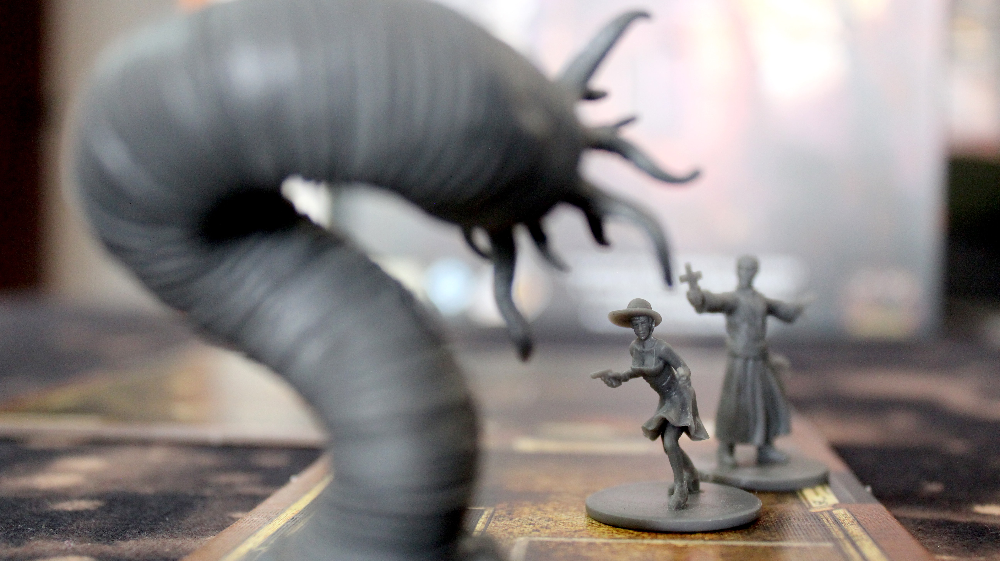
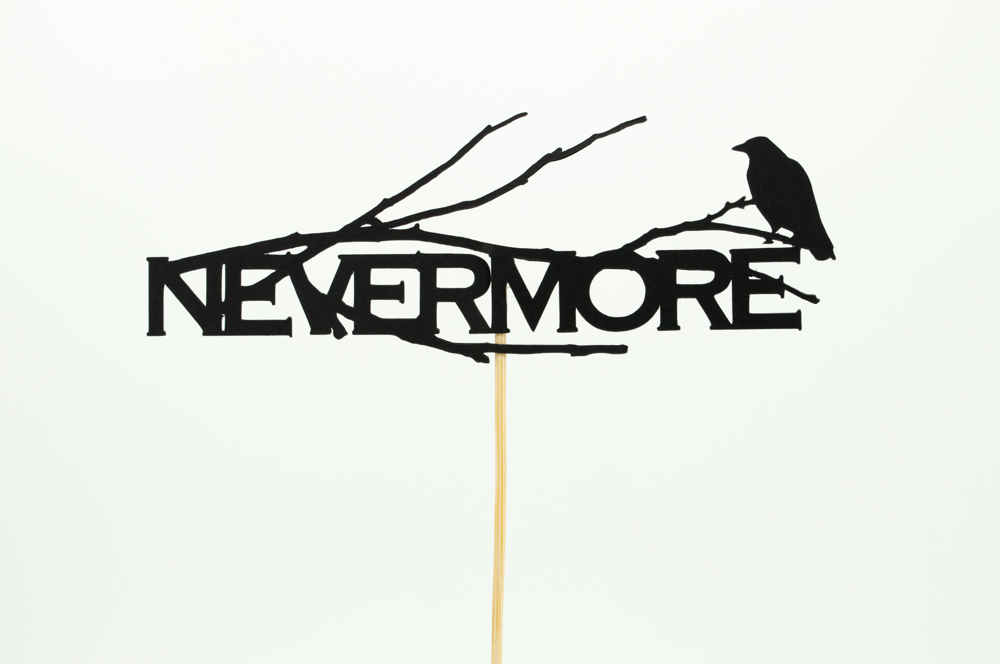

A Serious Page Turner
There are many different horror books on the shelf today including works from Stephen King, Egar Allen Poe, H.P. Lovecraft, and many others. Books are a great way to pass time if you got time to read. Some of the scarist books are The Stand by Stephen King, Hell House by Richard Matheson, The Ruins, by Scott Smith, and many more.
The horror genre of literature did get it start in 1765 and has grown substantially since then with newer tittles such as In Darkness Shadows Breathe by Catherine Cavendish, My heart is a Chainsaw by Stephen Graham Jones, Later by Stephen King and many more.
